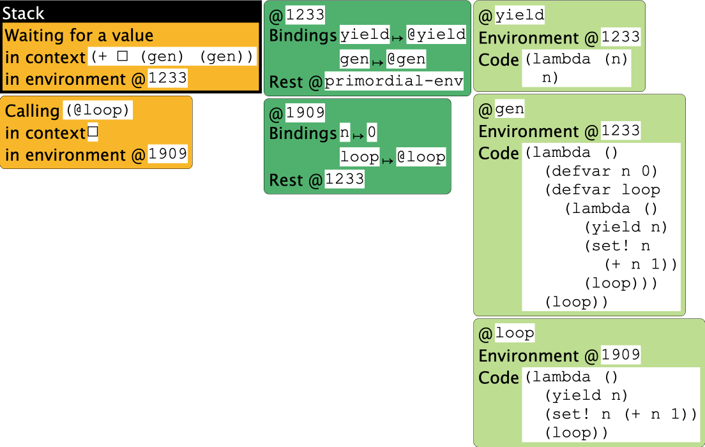
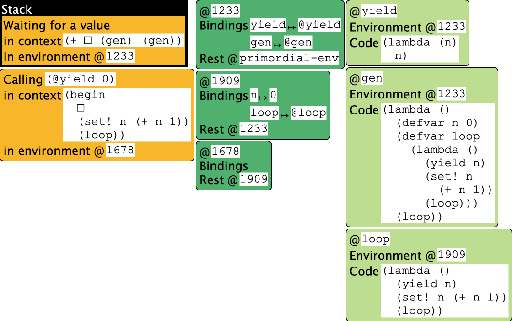

The following program is a rough simulation of the above Python program if SMoL had a notion of yield, which it does not. To avoid unbound identifier errors, we will use the following simple definition of yield:
(deffun (yield n)
n)
We can then translate the above code as follows:
(deffun (gen)
(defvar n 0)
(deffun (loop)
(yield n)
(set! n (+ n 1))
(loop))
(loop))
(+ (gen) (gen) (gen))
For simplicity, we’re ignoring the step where we instantiate the generator: i.e., we can have only one copy of the generator in this version, whereas the Python version lets us instantiate multiple. We will return to this later.
Observe that running the above program goes into an infinite loop, because yield does not “yield”. However, because the Stacker shows us intermediate steps in the computation, it still provides something very useful.
Now that we have this program, let’s run it through the Stacker. We will see a few preliminary states, and then one that looks like this:

At this point, the oldest frame represents the top-level expression, which is waiting for the first call to gen to compute. Inside gen, we have initialized n to 0. Now we are about to start computing the (potentially) infinite loop.
A little bit later, we see the following:

This picture is the essence of generators. Understanding it is critical.
Here is what is happening here. The top-level computation is waiting for the call to gen to finish and produce an answer. Within the generator, the computation has initialized n and is about to yield its current value. What is critical is the context of this operation:
(begin
•
(set! n (+ n 1))
(loop))
in @1678, which has no bindings and hence defers to @1909. This binds n to 0.
Now, suppose we could break up this stack into two parts (with the environment and store shared as needed):
(+ • (gen) (gen))
in @1233
(begin
•
(set! n (+ n 1))
(loop))
in @1678
Observe that each part looks like a full-fledged stack in its own right! The environment @1233 refers to names that the top-level uses (such as gen), while the environment @1678 (and hence @1909) refers to ones that the generator uses (such as n).
Until now, however, we have acted as if a program has only one stack. The simplest conceptual model for a generator is:
Each generator has its own local stack.
That is, the generator’s stack does not know about the computation in the main program or in any other generators. It only knows about the computation that it is performing. A yield does two things:
Everything else—variables, aliasing, closures, growth and decline of the stack with functions calls and returns, etc.—stays exactly the same. The only difference is that calling a generator causes computation to start, or resume the context, in a separate, disconnected stack.
Thus, in the above model, after the first yield succeeds, the top-level stack frame would be
(+ 0 • (gen))
in @1233
invoking the generator. This would resume the previous stack, so n would be set to 1, and the next iteration of the loop would run, which would
This would result in
(+ 0 1 •)
in @1233
repeating the above process, and hence producing 3.